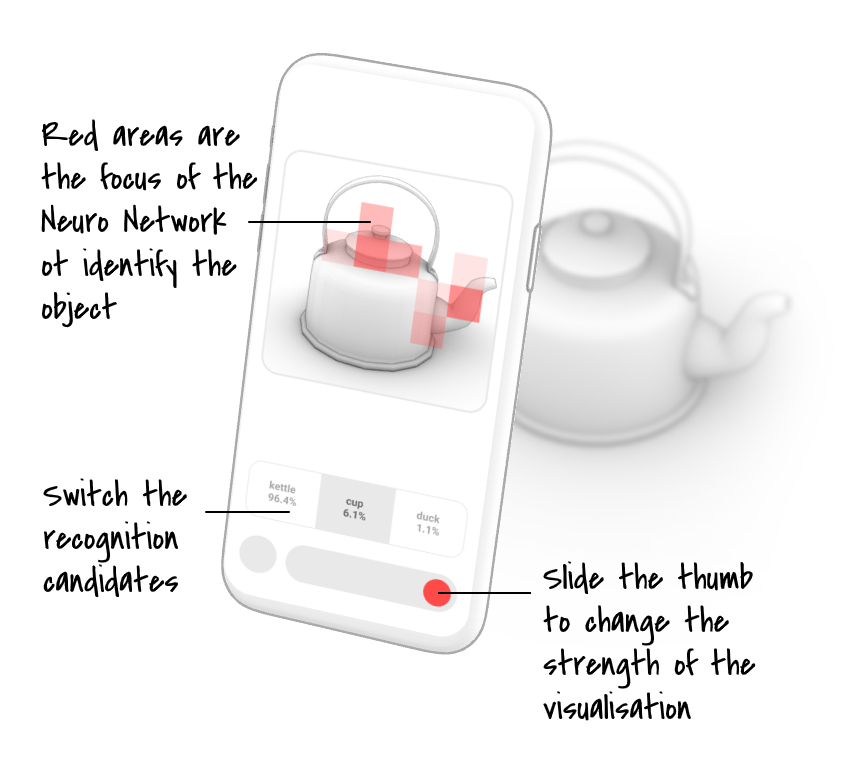

How does AI recognize an object? Try to take a photo of any object you like, and compare if you and AI focus on the same area to identify it.

This app is made by
Chao Wang based on a technique called Class Activation Map, which can visualise the attention of Convolutional Neural Network to identify an object. More information can be found in
this paper
The MobileNet surgery part is based on Evgeny Demidov's
CNN Heat Maps